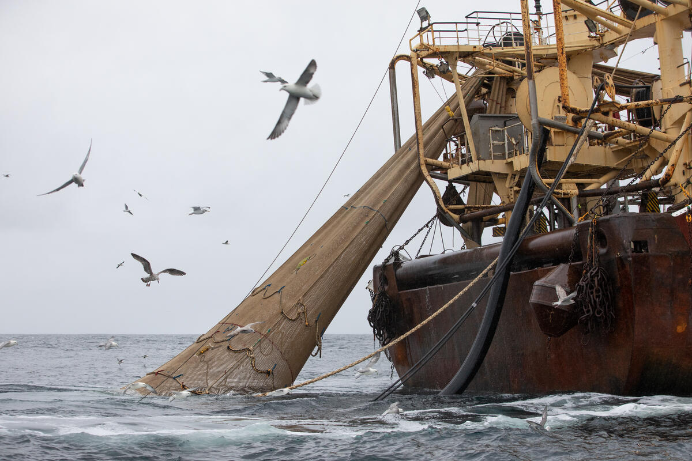
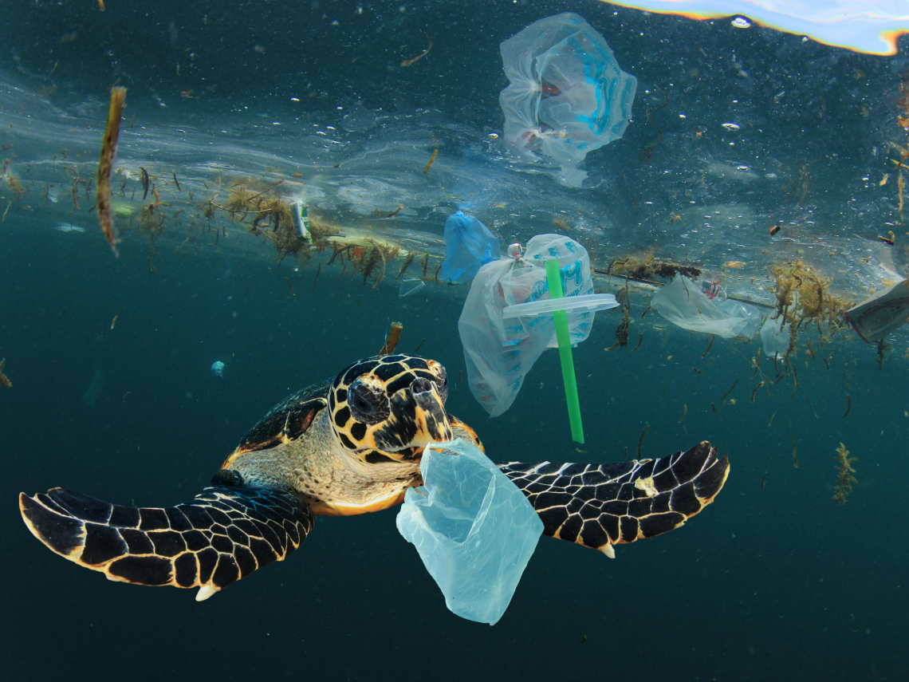
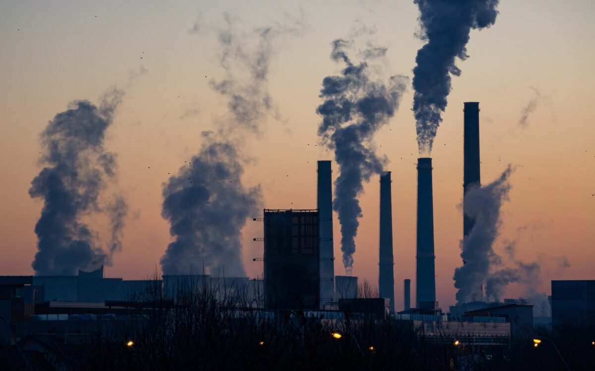
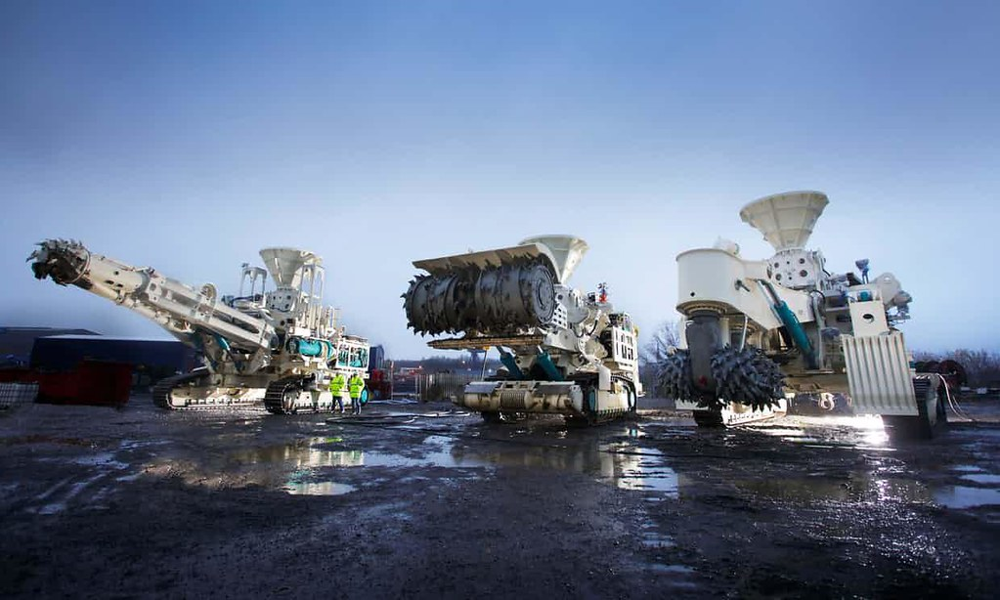
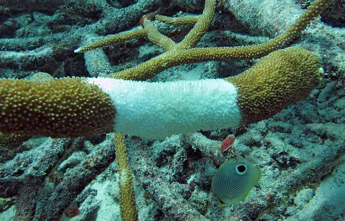

脆弱的海底世界
在這裡，我們將一同探討一個對我們地球重要的議題——海洋生態和珊瑚礁。眾所周知，這片蔚藍海洋正面臨著嚴重的挑戰，讓我們一起來看看到底是什麼正在破壞我們珍貴海洋的環境！
全球氣候變遷

氣候變遷不僅在陸地上留下明顯的痕跡，也在海洋中產生深遠的影響。隨著地球氣溫上升，海水也跟著變暖，這對珊瑚礁構成了極大的威脅。海水升溫引起的海水白化現象使珊瑚失去色彩，並且容易受到疾病的侵害。
而這種衝擊不僅僅是個案，更是全球海洋生態的一大警訊。升溫導致的海水白化不僅使得珊瑚失去美麗的色彩，更削弱了牠們的生存能力。極端天氣事件，如颱風和熱帶風暴的頻繁發生，進一步使珊瑚承受不斷的外部壓力。這提醒著我們，全球氣候變遷不僅是遙不可及的未來挑戰，更是正在漸次威脅著我們生態系統的現實問題。
過度捕撈
過度捕撈是指捕撈活動對海洋生態系統造成的過度壓力，可能導致漁業資源的耗盡，進而威脅珊瑚礁的健康。這種活動可能包括非法捕撈和使用不合理的捕撈手段，導致海洋生物種群的失衡。
這不僅限制了海洋生態的多樣性，也影響了整個食物網的穩定運作。如果我們不能採取有效的保育措施，這種現象可能會進一步擴大，對人類和海洋生態系統都帶來無法挽回的傷害。在這個關鍵時刻，我們需要共同思考、共同行動，以確保海洋資源的可持續利用，同時保護珊瑚礁所承載的豐富生態。
過度開發

過度開發指的是人類在沿海地區進行過度的建設和使用，這包括沙灘的大規模開發、港口的擴建以及河流的排放。這些活動不僅改變了自然環境，也直接對珊瑚礁的健康產生了負面影響。 沙灘的開發通常導致沿岸生態系統的破壞，而港口的建設可能改變沿岸海水的流動，對珊瑚礁造成影響。此外，河流的排放將大量的污染物輸送到海洋中，這些污染物可能包括農業和城市污染物，對水質造成嚴重的惡化，進而危害珊瑚礁的生態健康。
過度開發是一個需要我們深入思考的問題，因為它既關係到經濟發展，也關乎到生態環境的永續性。我們需要找到一個平衡點，在滿足發展需求的同時，確保不對珊瑚礁等海洋生態系統造成無可挽回的損害。這需要科學和可持續的規劃，以及全社會的參與和貢獻。
塑膠污染
當我們深入瞭解塑膠污染對海洋生物的影響時，可以發現這是一個嚴重且持續擴大的問題。塑膠製品在海洋中的存在對珊瑚礁和其他海洋生物構成了多方面的威脅。
Example code block首先，塑膠製品通常會分解成微小的顆粒，即微塑膠，這些微塑膠可以進入海水中，被其他生物誤食。這可能導致消化問題、內部傷害，甚至影響生物的營養吸收。
其次，塑膠製品作為漂浮物體，可以提供一個理想的基地供生物附著。這可能導致一些有害生物的定居，形成海洋生態系統的不平衡。
此外，塑膠製品還可能釋放出有毒物質，對珊瑚礁和其他海洋生物造成長期的污染。這些有毒物質可能影響生物的生長和繁殖，進一步威脅整個海洋生態系統的穩定性。
農業和城市污染
農業排放物和城市污染物可能通過河流流入海洋，引起水質惡化，對珊瑚礁和海洋生態造成危害。
農業排放物包括化肥和農藥，這些化學物質可能在流入海洋後導致水質惡化，並對珊瑚造成直接的毒性影響。此外，農業活動可能導致土壤侵蝕，增加土壤和沉積物進入海洋的量，進而導致珊瑚礁的覆蓋和窒息。
城市污染物包括工業排放物、污水和垃圾等。這些污染物通常透過排水系統流入河流和海洋，影響水質和生態平衡。高濃度的有機和無機污染物可能對珊瑚造成毒性影響，並加劇水質惡化，影響珊瑚的生長和健康。
海底拓展和礦業活動
海底拓展和礦業活動。這些活動可能破壞海床，增加沉積物和污染物的輸送，對周邊珊瑚礁的健康造成不利影響。
海底拓展是指在海洋底部進行人為的填海和土壤整平，以擴建港口、建設人工島嶼或進行其他工程活動。這種活動通常會引起大量的沉積物懸浮在水中，導致水質變差。這對附近的珊瑚礁產生影響，因為珊瑚對高濃度的沉積物非常敏感，可能導致白化和死亡。
礦業活動涉及在海床開採礦產資源，如沙礫、珊瑚礁、寶石等。這樣的開採可能破壞珊瑚礁的結構，打亂海底的生態平衡，並導致水域中的沉積物增加。這對珊瑚礁的生存和再生產能力產生不利影響，加劇了其面臨的威脅。
珊瑚疾病
珊瑚疾病是由微生物引起的病害，其擴散可能導致大規模的珊瑚死亡，特別是在全球氣候變遷和其他壓力因素的共同影響下。
這些疾病通常侵襲珊瑚的軟組織，造成組織的退化和融合，最終導致珊瑚的死亡。一些常見的珊瑚疾病包括白化病、黑斑病和腫瘤病，它們對不同種類的珊瑚產生不同程度的影響。
珊瑚疾病的擴散通常受到海水溫度升高、海洋污染和人類活動的影響。全球氣候變遷使得海水溫度不斷上升，為病原微生物提供了更適合的生存條件。同時，海洋污染和不當的人類干擾也可能增加珊瑚對疾病的脆弱性。
要應對珊瑚疾病，保護珊瑚礁生態系統，我們需要進行監測和研究，以了解病害的傳播機制和防治方法。同時，加強對海洋環境的保護，降低海洋污染和氣候變遷的影響，是維護珊瑚礁健康的關鍵之舉。